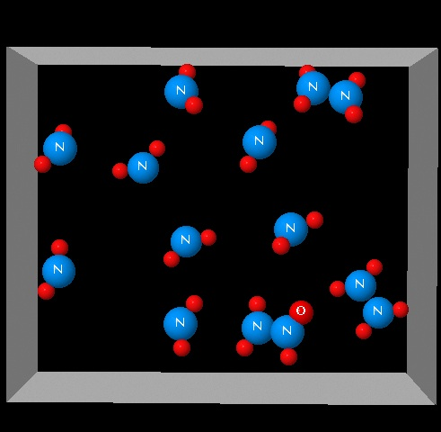

Equilibrio 15
La figura muestra un sistema de dos especies en equilibrio: 2 NO2(g)⇄ N2O4(g) con un valor de ΔH=-57 kJ/mol.
|  |
Pulsa en la figura y estudia la visualización que aparece. Indica ¿cuál de la siguientes variables ha podido originar los cambios observados en el sistema?
Suponed que el recipiente es flexible y se adapta a la presión del sistema tal como sucede con un balón de goma.
| Disminución de la presión | INCORRECTO. En este proceso no se produce una
disminución de la presión externa. El recipiente se contrae porque disminuye el número de moléculas gaseosas.
|
| Disminución de la Tª | CORRECTO. La formación de N2O4(g)
va acompañada con un desprendimeinto de calor. Por ello al disminuir la Tª el equilibrio se desplaza a la formación de
N2O4(g).
|
| Aumento de la Tª. | INCORRECTO. Un aumento de la temperatura forzaría al sistema a
absorber calor, desplazandose hacia la izquierda.
|